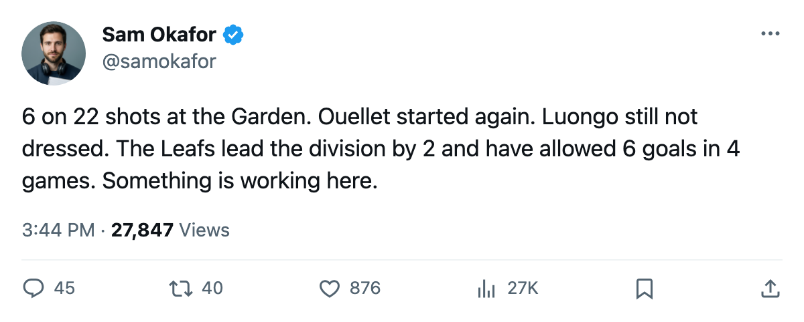

TOR
TOR NYR
NYRLEAFS 6, NYR 2: 15 goals in 4 games, and Ouellet takes the crease
Toronto leads the Northeast at 6 points after Saturday's road blowout, and the Conn Smythe winner has not dressed in 2 nights
 Sam OkaforLeafs beat reporter · Queen City Telegram
Sam OkaforLeafs beat reporter · Queen City Telegram
Toronto scored 6 goals on 22 shots at New York on Saturday, improving to 3-1-0 and first place in the Northeast at 6 points. The Maple Leafs have put up 15 goals in 4 games and allowed 6.
Maxime Ouellet86 started his 2nd straight night, stopping what came at him while the offence carried the night.  Roberto Luongo95 started the season's first 2 games and has not dressed since October 12. No body part is listed against him. His contract reads $1.60M with 3 years remaining. Luongo's overall grade on the Bureau's Book is 97; Ouellet's is 86.
Roberto Luongo95 started the season's first 2 games and has not dressed since October 12. No body part is listed against him. His contract reads $1.60M with 3 years remaining. Luongo's overall grade on the Bureau's Book is 97; Ouellet's is 86.
The scoring is spread deep.  Stanislav Chistov87 leads Toronto with 4 points on 3 goals in 12.0 minutes a night.
Stanislav Chistov87 leads Toronto with 4 points on 3 goals in 12.0 minutes a night.  Rick Nash85 has 4 points on 2 goals at 20.0 minutes.
Rick Nash85 has 4 points on 2 goals at 20.0 minutes.  Barret Jackman86, a defenceman, carries 4 assists in 28.0 minutes. Petr Chlup87 has 3 points,
Barret Jackman86, a defenceman, carries 4 assists in 28.0 minutes. Petr Chlup87 has 3 points,  Mats Sundin92 has 3 points, and
Mats Sundin92 has 3 points, and  Brad Richards87 has 3 assists in 12.0 minutes.
Brad Richards87 has 3 assists in 12.0 minutes.
 Alexander Mogilny89 has 2 goals in 19.8 minutes a night at age 36.
Alexander Mogilny89 has 2 goals in 19.8 minutes a night at age 36.  Marian Gaborik99 scored 1 goal in 3 games at 16.0 minutes after missing the opener. Vaclav Spacek81 has 2 goals in 7.0 minutes a night.
Marian Gaborik99 scored 1 goal in 3 games at 16.0 minutes after missing the opener. Vaclav Spacek81 has 2 goals in 7.0 minutes a night.
A blue line with the Norris winner watching
 Bryan McCabe84, the Norris Trophy winner from last season, remains a healthy scratch at $3.00M with 3 years on his deal. The six defencemen who have played have conceded 6 goals in 4 games.
Bryan McCabe84, the Norris Trophy winner from last season, remains a healthy scratch at $3.00M with 3 years on his deal. The six defencemen who have played have conceded 6 goals in 4 games.  Rostislav Klesla87 and Barret Jackman carry the top pairing at 28.5 and 28.0 minutes respectively.
Rostislav Klesla87 and Barret Jackman carry the top pairing at 28.5 and 28.0 minutes respectively.  Tomas Kaberle85 and
Tomas Kaberle85 and  Jiri Fischer84 sit second at 18.5 apiece. Carlo Colaiacovo76 and Andreas Stahle76 round out the lineup at 12.0 minutes each.
Jiri Fischer84 sit second at 18.5 apiece. Carlo Colaiacovo76 and Andreas Stahle76 round out the lineup at 12.0 minutes each.
 Phoenix Coyotes visits on October 17. Phoenix is 0-3-0 with 4 goals for and 7 against, last in the Pacific. The first meeting between these clubs this season.
Phoenix Coyotes visits on October 17. Phoenix is 0-3-0 with 4 goals for and 7 against, last in the Pacific. The first meeting between these clubs this season.
The Leafs then play at  Montreal Canadiens on October 19, host
Montreal Canadiens on October 19, host  Boston Bruins on October 21, and host
Boston Bruins on October 21, and host  Florida Panthers on October 23.
Florida Panthers on October 23.
